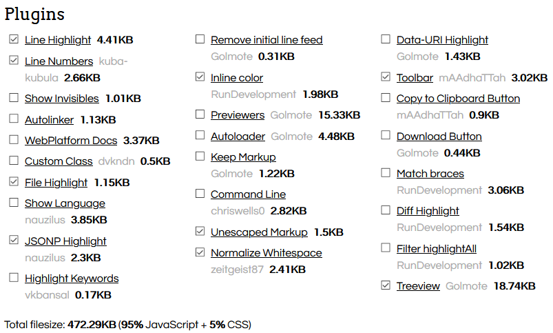

draft nikola guide md
Introduction
Nikola is a good way to build a static website/blog. It's versatile, powerful and open-source. There are other options such as, Hugo, Pelican, and Sphinx. After reviewing their pros and cons, I decided to use Nikola mainly because of its Jupyter and Matlab-kernel integration.
There is a lot of good material on the internet about installing and using Nikola, but I thought it will be useful to show my methodology from the perspective of someone who has never used Anaconda, Jupyter and Nikola.
Nevertheless, here is a list of the official documentation and good tutorials I recommend:
- Nikola Getting Started
- Nikola Handbook
- Complete and comprehensive tutorial
- Compact tutorial
- For extra customization
Pre-requisites
- Anaconda
- Jupyter Notebook
- Matlab-kernel (jmatlab)
- VSCode, but you can use any editor you like.
- GitHub pages
- Knowledge in HTML, CSS, JS, Matlab, Python, Markdown, and reStructedText.
Create a new environment with Anaconda or Conda
- Download and install Anaconda or Miniconda, it's your choice.
- Make sure
C:\ProgramData\Anaconda3andC:\ProgramData\Anaconda3\Scriptsare listed in your Windowspath variables. - In Anaconda Navigator, create a new environment called
jmatlabNikolawithPython 3.6, or open terminal and runconda create -n jmatlabNikola python=3.6 - A new folder will be created inside
C:\Users\<user_name>\.conda\envs\
Why Python 3.6?
Because Matlab engine is compatible only with Python 2.7, 3.6, and 3.7. Version 3.7 is for Matlab 2019+, and version 3.6 is for Matlab 2018+. Also, Python 3.6 is known as the most stable version.
Why a new environment?
Anaconda (conda) is a powerful package management platform that allows you to install any self-contained workspace (environment) with different kernels and libraries. For example, let's say I have two environments:
-
jmatlabNikola: composed by Python 3.6, Jupyter Notebook, jmatlab, and Nikola. -
openCV_TF: composed by Python 3.8, OpenCV, and TensorFlow.
So, I want to write a post:
- Run
activate jmatlabNikola→ it switches to Python 3.6 (you can check withpython --version). Any post I write will be compiled by this environment only. None of the libraries from the other environment will be available.
I want to work with OpenCV:
- Run
activate openCV_TF→ it switches to Python 3.8, the kernel and libraries ofjmatlabNikolaare not available and won't get mixed with this environment.
Notes
- Don't touch the
baseenvironment of Anaconda if you want to test packages. Use it as a reference because it's the default environment for your OS. - If you already have Python installed, you can still use Anaconda without any problems. Just make sure the
Anaconda python pathis configured in your code editor and in your Windows. - Your work files and folders could be anywhere in your hard drive, but don't create them inside the environments folders. If you delete any environment by accident, it's very unlikely to recover them.
Install Jupyter Notebook, Nikola and jmatlab
- Open terminal as administrator in
cd C:\Users\<user_name>\.conda\envs\jmatlabNikola - Jupyter Notebook:
- When you create a new environment with Anaconda, Jupyter Notebook is installed by default.
- For conda, run
pip install notebook - Run
pip install Nikola[extras] - Run
pip install matlab_kernel - Config Matlab:
- Run
activate jmatlabNikola - Go to
cd “C:\Program Files\MATLAB\R2018b\extern\engines\python” - Run
python setup.py install - Check installed kernels
jupyter kernelspec list
Done!, now you have everything what you need in your environment. Check all installed libraries with Anaconda Navigator.
Notes
- Make sure you activate
jmatlabNikolaenvironment with admin rights. - If you have doubts about the python kernel, check
python --versionevery time you activate an environment.
Create the Nikola demo site, and your first post
- Create a new folder called
bloganywhere you like except insidejmatlabNikolaenvironment. - Open terminal inside your
blogfolder. - Activate the environment.
activate jmatlabNikola
- Initialize a demo, and fill its content.
nikola init --demo
- Build (generate) the HTML files of the site.
nikola build
- View in your browser, it will open a host in
http://127.0.0.1:8000.
nikola serve -b
- Automatically
buildandserveyour site if you want to see all changes.constantly (recommended).
nikola auto
- Create a new post and new page. By default, they are created in
.rstformat.
nikola new_post
nikola new_page
- Other posts in different formats.
-f ipynbneeds extra configuration, see .
nikola new_post -f md
nikola new_post -f rst
nikola new_post -f html
nikola new_post -f ipynb
- Press
ctrl+cto stop the server.
Create a clean Nikola site
Same as before but run nikola init instead.
That's it!. Navigate through the files and see what Nikola has done with the demo, and the clean version.
Nikola directories
Although, most of them are self-explained, they can be categorized in three types:
- Content:
files,galleries,images,listings,pages,posts. - Customization:
plugins,templates,themes. - Visible output:
output. Here, all your content is parsed to.htmlto be visible in any web hosting service such as GitHub pages.
../__pycache__
../cache
../files # all the files of your blog, e.g. pdf, videos, etc.
../galleries # galleries of images.
../images # images of your website
../listings # code files, e.g. .py, .tex, .m, .cpp, etc.
../output # the root directory of your website.
../pages # stores index.html, blog.html, home.html, about-me.html.
../plugins # additional plugins.
../posts # stores all your posts, .md, .html, .ipynb, and .rst
../templates # additional templates.
../themes # addtional themes.
Configure a non-blog Nikola site
From now on, we will configure Nikola using conf.py, located in your root directory.
Create the index and bio page
First, create both pages using the terminal,
nikola new_page --title="index"
nikola new_page --title="bio"
add them to the navigation links in conf.py.
NAVIGATION_LINKS = {
DEFAULT_LANG: (
("/index.html", "Home"),
("/bio/index.html", "Bio"),
...
),
Add any other page, just make sure you add it in the navigation list, e.g. about-me, contact, etc.
Use Jupyter Notebooks
By default, Nikola uses the blog configuration,
POSTS = (
("posts/*.rst", "posts", "post.tmpl"),
("posts/*.md", "posts", "post.tmpl"),
("posts/*.txt", "posts", "post.tmpl"),
("posts/*.html", "posts", "post.tmpl"),
("posts/*.ipynb", "posts", "post.tmpl"),
)
PAGES = (
("pages/*.rst", "pages", "page.tmpl"),
("pages/*.md", "pages", "page.tmpl"),
("pages/*.txt", "pages", "page.tmpl"),
("pages/*.html", "pages", "page.tmpl"),
("pages/*.ipynb", "pages", "page.tmpl"),
)
change it to the non-blog configuration,
POSTS = (
("posts/*.rst", "blog", "post.tmpl"),
("posts/*.md", "blog", "post.tmpl"),
("posts/*.txt", "blog", "post.tmpl"),
("posts/*.html", "blog", "post.tmpl"),
("posts/*.ipynb", "blog", "post_ipynb.tmpl"),
)
PAGES = (
("pages/*.rst", "", "page.tmpl"),
("pages/*.md", "", "page.tmpl"),
("pages/*.txt", "", "page.tmpl"),
("pages/*.html", "", "page.tmpl"),
("pages/*.ipynb", "", "post_ipynb.tmpl"),
)
# And to avoid a conflict because blogs try to generate /index.html
INDEX_PATH = "blog"
and check if .ipynb is listed in the compilers section.
COMPILERS = {
"rest": ['.rst', '.txt'],
"markdown": ['.md', '.mdown', '.markdown'],
"textile": ['.textile'],
"txt2tags": ['.t2t'],
"bbcode": ['.bb'],
"wiki": ['.wiki'],
"ipynb": ['.ipynb'],
"html": ['.html', '.htm'],
...
Create the post_ipynb.tmpl template
- Create a new theme
nikola theme --new=themeBlog --parent=bootstrap4 --engine=mako
- Copy
post.tmpltemplate from parent theme
nikola theme --copy-template=post.tmpl
- Move it to the
../themes/themeBlog/templates/folder and rename it aspost_ipynb.tmpl - Add the following in the extra head section
<%block name="extra_head">
...
<link rel="stylesheet" href="../../assets/css/post_ipynb.css">
</%block>
Create the post_ipynb.css
- Create the file in
../themeBlog/assets/css/folder and copy the following
div.prompt {
padding: 0.6em;
font-size: 13px;
background-color: #ffffff;
margin-right: 0em;
-webkit-border-radius: 3px;
-moz-border-radius: 3px;
border-radius: 3px;
}
div.output_prompt {
/* 5px right shift to account for margin in parent container */
margin: 0 5px 0 0px;
}
div.output_area pre {
font-size: 13px;
}
div.text_cell_render {
padding: 0px;
color: #333333;
}
.rendered_html p {
text-align: left;
}
.rendered_html ul {
margin: 0 0 12px 25px;
}
.rendered_html :visited {
text-decoration: none;
}
.rendered_html :link {
text-decoration: none;
}
.rendered_html pre, .rendered_html code {
background-color: #DDDDDD;
margin: 1em 0em;
font-size: 14px;
}
.rendered_html pre {
padding-left: 0.5em;
padding-right: 0.5em;
padding-top: 0.05em;
padding-bottom: 0.05em;
}
.page-content > .content p {
margin: 0 0 0px;
}
div.input {
border: none;
background-color: none;
}
/* set a max-width for horizontal fluid layout and make it centered */
.body-content {
margin-right: auto;
margin-left: auto;
max-width: 100%; /* or 950px */
}
/* Widens image-containing divs so that image is full body width */
div.output_subarea {
max-width: 100%;
}
Clean version of post_ipynb.css
div.prompt {
display: none;
}
div.input {
border: none;
background-color: none;
}
div.input * {
background-color: none;
}
/* set a max-width for horizontal fluid layout and make it centered */
.body-content {
margin-right: auto;
margin-left: auto;
max-width: 750px; /* or 950px */
}
/* Widens image-containing divs so that image is full body width */
div.output_subarea {
max-width: 100%;
}
Use your custom theme
THEME = "themeBlog"
Done!. Now you can create and edit posts as Jupyter Notebooks.
Extra configurations
Files and Listings
FILES_FOLDERS = {'files': 'files'} # Which means copy 'files' into 'output/files'
LISTINGS_FOLDERS = {'listings': 'listings'} # Which means process listings from 'listings' into 'output/listings'
Enable single Archive
# Create one large archive instead of per-year
CREATE_SINGLE_ARCHIVE = True
Favicon
FAVICONS = (
("icon", "/files/blogFavicon.ico", "128x128"),
)
License
LICENSE = """
<a rel="license" href="https://creativecommons.org/licenses/by-nc-sa/4.0/">
<img alt="Creative Commons License BY-NC-SA"
style="border-width:0; margin-bottom:12px;"
src="https://i.creativecommons.org/l/by-nc-sa/4.0/88x31.png"></a>"""
Header
Add FontAwesone and Academic Icons.
EXTRA_HEAD_DATA = '''
<link rel="stylesheet" href="https://maxcdn.bootstrapcdn.com/font-awesome/latest/css/font-awesome.min.css">
<link rel="stylesheet" href="https://cdn.rawgit.com/jpswalsh/academicons/master/css/academicons.min.css">
'''
Footer
CONTENT_FOOTER = '''
<div class="text-center">
<p>
<span class="fa-stack fa-2x">
<a href="https://github.com/<user_name>">
<i class="fa fa-github-square fa-stack-2x"></i>
</a>
</span>
<span class="fa-stack fa-2x">
<a href="https://scholar.google.com/citations?user=ID">
<i class="ai ai-google-scholar-square ai-2x"></i>
</a>
</span>
<span class="fa-stack fa-2x">
<a href="https://www.linkedin.com/in/ID">
<i class="fa fa-square fa-stack-2x"></i>
<i class="fa fa-linkedin fa-inverse fa-stack-1x"></i>
</a>
</span>
<span class="fa-stack fa-2x">
<a href="mailto:{email}">
<i class="fa fa-square fa-stack-2x"></i>
<i class="fa fa-envelope fa-inverse fa-stack-1x"></i>
</a>
</span>
</p>
<p>
{license} Contents © {date} <a href="mailto:{email}">{author}</a> - Powered by <a href="https://getnikola.com" rel="nofollow">Nikola</a>
</p>
</div>
'''
Google search
SEARCH_FORM = """
<!-- Google custom search -->
<form method="get" action="https://www.google.com/search" class="navbar-form navbar-right" role="search">
<div class="input-group">
<input type="text" name="q" class="form-control" placeholder="Search">
<button type="submit" class="btn btn-secondary">
<i class="fa fa-search"></i>
</button>
<input type="hidden" name="sitesearch" value="%s">
</div>
</form>
<!-- End of custom search -->
""" % SITE_URL
Notes
- You may find that conf.py uses Glyphicon, but Bootstrap 4+ uses FontAwesome instead.
- For Bootstrap 4+, change form-group to input-group.
- More configurations with Bootstrap 4 demo Icon inputs.
Disqus
- Create an account on Disqus.
- On Disqus, create a new site.
- Choose a
disqus_shortname, e.g.github_user_name. I recommend not to use<user_name>.github.io - Add your blog site
<user_name>.github.io. - Chose Basic Plan
- Skip instructions in the Select Platform section.
- Add the following
COMMENT_SYSTEM = "disqus"
COMMENT_SYSTEM_ID = "<disqus_shortname>"
Config the sticky menu
You can set the navigation bar sticks on the top as you scroll down the page.
- Copy the parent base template
nikola theme --copy-template=base.tmpl
- Move it to
/themes/themeBlog/templates/and add the following as follows
<!-- Menubar -->
<nav class="navbar navbar-expand-md sticky-top mb-4
...
Adding Prism
By default, Nikola uses Pygments for code highlighting.
- For Markdown and Jupyter Notebook.
```python
def fn()
pass:
print('hello world')
```
- In rST.
.. code-block:: python
def fn()
pass:
print('hello world')
Alternatively, I like to use Prism due its JSONP Highlight plugin that allows to import external code hosted on GitHub or some other place.
- Select the Minifed version with all Languages.
- You can add any plugins. .
- Download the JS and CSS files.
- Save them in
/themes/themeBlog/assets/css/prism.cssand/themes/themeBlog/assets/js/prism.js - Add the following into the
conf.py
EXTRA_HEAD_DATA = '''
...
<link href="../../assets/css/prism.css" rel="stylesheet" />
'''
...
BODY_END = '''
<script src="../../assets/js/prism.js"></script>
'''
- Also, add the
prism.cssinto thepost_ipynb.tmpl
<%block name="extra_head">
...
<link href="../../assets/css/prism.css" rel="stylesheet" />
</%block>
- Done!. Now, use the following code in Markdown and Jupyter Notebook in order to import and highlight a code file.
<pre class="lang-markup" data-jsonp="https://api.github.com/repos/<user_name>/<repository_name>/contents/<file_location>"></pre>
- In rST.
.. raw:: html
<pre class="lang-markup" data-jsonp="https://api.github.com/repos/<user_name>/<repository_name>/contents/<file_location>"></pre>
- Check Prism Plugins for usage examples.
Latex with Mathjax
# If you want support for the $.$ syntax (which may conflict with running
# text!), just use this config:
MATHJAX_CONFIG = """
<script type="text/x-mathjax-config">
MathJax.Hub.Config({
tex2jax: {
inlineMath: [ ['$','$'], ["\\\(","\\\)"] ],
displayMath: [ ['$$','$$'], ["\\\[","\\\]"] ],
processEscapes: true
},
displayAlign: 'center', // Change this to 'left' if you want left-aligned equations.
"HTML-CSS": {
styles: {'.MathJax_Display': {"margin": 0}}
}
});
</script>
"""
GitHub pages
- Create a new repository named
<user_name>.github.io - Initialize Git
git init .
git remote add origin https://github.com/<user_name>/<user_name>.github.io
- Edit
conf.py
GITHUB_SOURCE_BRANCH = 'src'
GITHUB_DEPLOY_BRANCH = 'master'
GITHUB_REMOTE_NAME = 'origin'
GITHUB_COMMIT_SOURCE = True
- Create a
.gitignore
.vscode
.doit.db*
cache
__pycache__
output
.ipynb_checkpoints
*/.ipynb_checkpoints/*
- Deploy to GitHub
nikola github_deploy
- Choose
masteras the branch on GitHub Pages settings.
Comentarios
Comments powered by Disqus